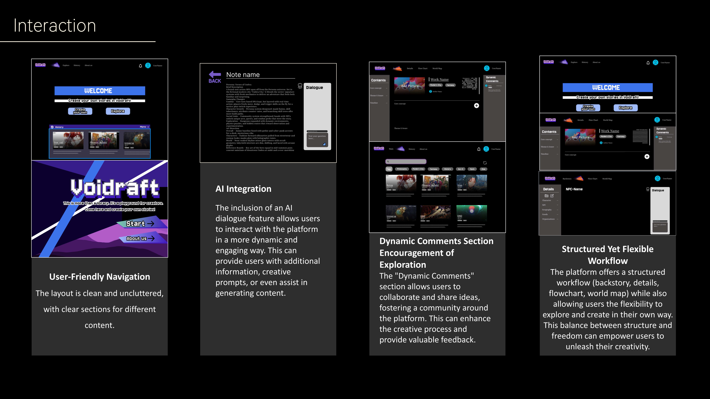

Archive / UI/UX
VOIDRAFT
A website interface and visual identity developed through Figma and web design studies.
← Back to home01 / Overview
Design concept
VOIDRAFT is an interface design project exploring the visual direction, information layout and experience of a website. The existing materials document its concept and presentation.
02 / Design studies
Figma & web

Interface poster.

Website concept.
03 / Process
Further documentation
Wireframes, prototype decisions, front-end implementation and a live demonstration can be documented here as verified materials are added.